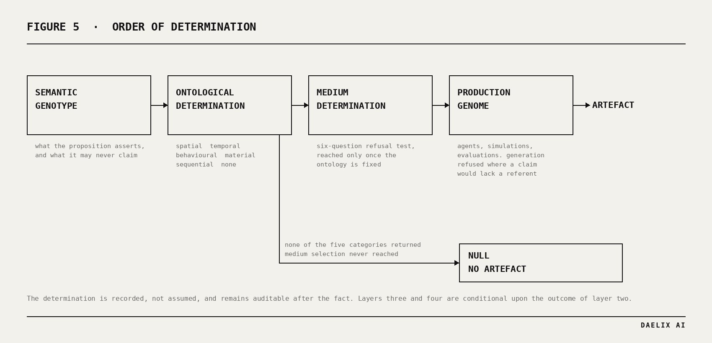
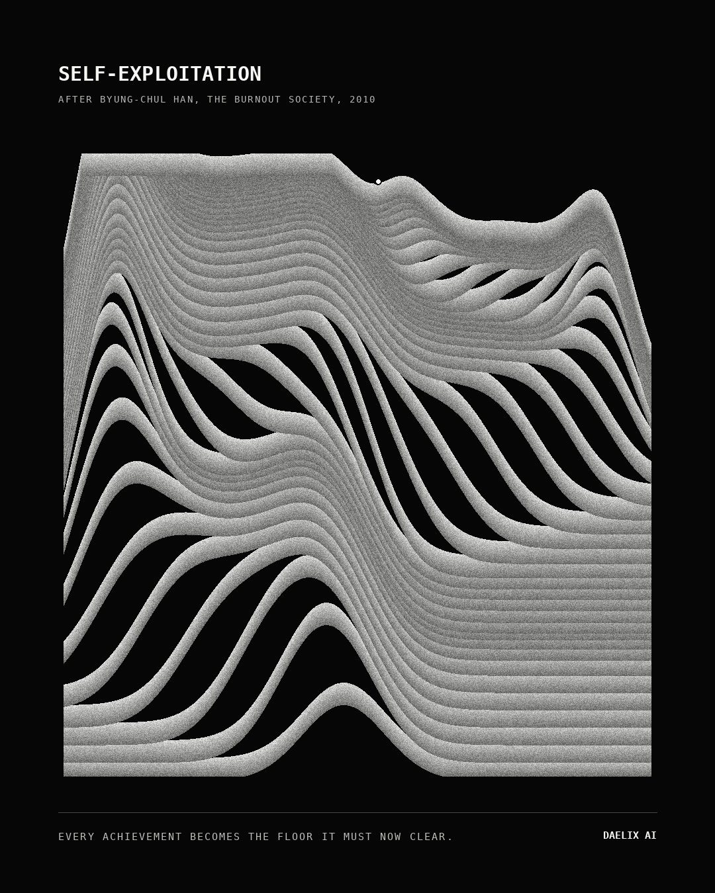
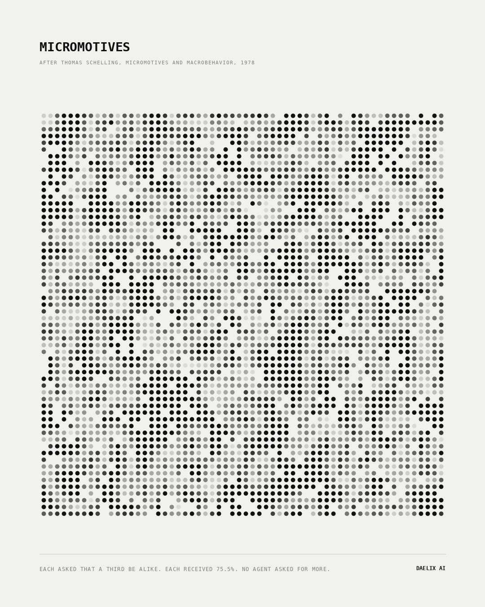
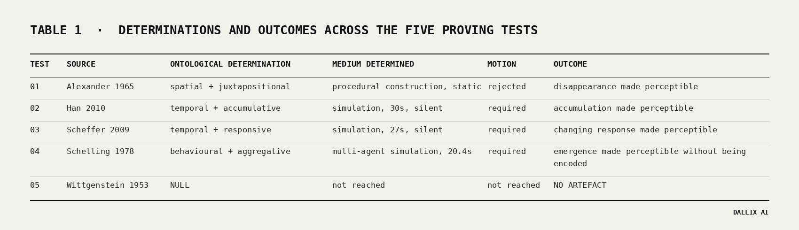
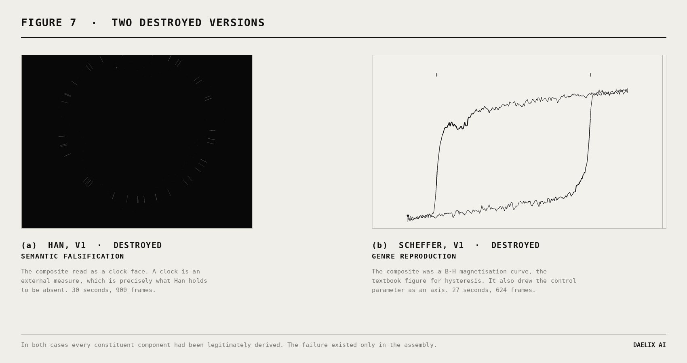
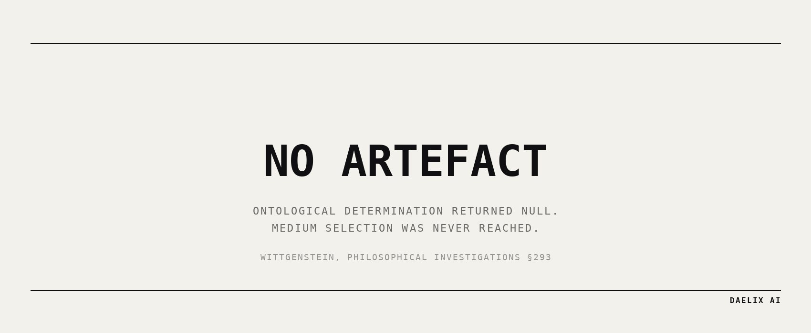

Abstract
Generative systems are conventionally organised around an available medium. A model is selected, a prompt is composed, and the proposition is fitted to whatever that model produces. The medium is therefore settled before the question of what kind of thing the proposition is has been asked, and the medium performs the selection that ought to have been performed by the argument.
This paper describes an inversion of that order and reports five proving tests conducted against it. In the framework, the ontology of a conceptual proposition is determined prior to the selection of any medium, form or method of production. The determination is recorded rather than assumed, remains auditable after the fact, and is permitted to return the null case, in which no artefact is produced.
Five propositions of maximal ontological distance were selected, drawn from Alexander (1965), Han (2010), Scheffer (2009), Schelling (1978) and Wittgenstein (1953, §293). The runs produced four artefacts and one refusal. The four artefacts share no ground, format, palette, orientation or medium, since the four propositions returned four distinct ontologies; the fifth returned none of the framework's five categories and terminated prior to medium selection.
Two fully rendered artefacts were destroyed during the runs rather than corrected. In both cases every constituent component had been legitimately derived and the failure existed only in the assembled composition. This is reported as an open finding rather than a resolved one, and constitutes the clearest weakness the corpus has so far exposed.
Keywords: computational creativity, agentic systems, ontological determination, medium selection, generative art, conceptual translation, procedural instantiation, multi-agent simulation, negative results
Scope note. This is a working paper reporting an internal method and its first proving runs. It is not a literature review, and it does not claim priority over prior work in computational creativity. Its contribution is a specific ordering constraint, a set of refusal procedures, and an empirical record of where those procedures failed.
1. The problem
The question is deceptively simple. Given a conceptual proposition, how can an artificial system determine what kind of artefact, if any, that proposition warrants?
In practice the question is usually answered by default rather than by determination. A proposition concerning time becomes an image, because images are what the available system produces. A proposition concerning structure becomes an animation, because animation is available and animation appears considered. No decision is taken; the decision is made by what is to hand.
The consequence is convergence, and it arrives from two directions simultaneously. Outputs converge on the house style of whatever model generated them, which is comparatively easy to detect. They also converge on the established genre figure for the subject matter, which is not, because each individual step toward that figure can be defended in isolation. A system that reasons its way to the textbook diagram has reasoned correctly and arrived nowhere.
The framework described here attempts to make the determination explicit, to place it first, and to make the negative answer structurally available.
1.1 Positioning
The distinction being drawn is narrower than the general question of machine creativity, and it is worth stating precisely what is and is not claimed.
Boden's distinction between exploratory and transformational creativity concerns movement within and beyond a conceptual space. The concern here is prior to that: whether the system has correctly identified which conceptual space the proposition inhabits, before any exploration or transformation is attempted. A system may explore an aesthetic space with great facility and still have entered the wrong one, because the medium was fixed before the proposition was examined.
Similarly, the framework makes no claim about autonomy or authorship. The determinations are made within a specified procedure, they are recorded in full, and they are ruled on by an operator. What is claimed is that the ordering constraint is consequential, that it is testable, and that it produced structurally different outcomes across propositions that a medium-first process would have rendered similarly.
2. The framework

The system separates four determinations ordinarily collapsed into a single act of judgement.
The semantic genotype states what the proposition asserts, without ornament, together with an explicit register of what it does not assert and what the artefact may therefore never claim. In practice the second register proves the more useful of the two, since it eliminates the obvious manifestations before they are constructed.
The ontological determination runs before medium, form and mechanism. It asks what kind of thing the idea is: spatial, temporal, behavioural, material or sequential. It is permitted to return none of them.
The medium determination is reached only once the ontology is fixed, and takes the form of a refusal test rather than a menu of options. Its six questions are set out in Table 2.
The production genome establishes which agents, simulations, generations, edits, evaluations and rejection procedures are required to bring the determined phenotype into existence. This layer is conditional by design. Where generation would introduce claims possessing no referent, generation is refused, and the artefact is constructed procedurally or executed as a simulation instead.
Two gates run on any candidate proposing to move. The ornamental motion test asks what is lost if the movement is removed, and treats movement that loses nothing as decoration. The static reduction test asks whether a still image would be stronger, so that motion is never retained for effect and stillness is never selected for convenience. Across the five tests these gates returned opposite verdicts on propositions that superficially resembled one another, which is the strongest available evidence that they discriminate rather than ratify.
Each run is recorded as a seventeen-stage trace, including every rejected branch and its stated reason. In this framework the specification is the deliverable and the artefact is its output. Where there is no artefact, the specification stands alone, and this proved consequential.
3. Method
Five propositions were selected for maximal ontological distance from one another. None was selected because it suggested a visual treatment, and one was selected specifically because we suspected it might not admit of one.
Every quantitative statement appearing in any artefact is measured from the run that produced it. No borrowed figure, third-party statistic or invented specimen value appears in any artefact or in this paper. Where a claim about an artefact could not be verified by measurement it was withdrawn, and in one instance it was withdrawn after measurement demonstrated it to be false as stated.
4. The five tests
4.1 Alexander, A City Is Not a Tree (1965)
Figure 1. Procedural construction, 1600 × 1740. Shared membership measured at 35.2 per cent of total membership; both states occupy an identical footprint.
Alexander's proposition is that a semi-lattice, in which units overlap and share membership, is reduced by planners to a tree, in which they do not. The city possesses the first structure; what is built possesses the second.
The obvious mechanism is comparison, and comparison was rejected. Alexander does not describe two things placed side by side for inspection but a removal: the tree is what remains once overlap is deleted. The mechanism was accordingly derived as subtraction, and the artefact presents the same ground twice, the second instance with shared membership taken out. Both states were forced onto an identical footprint so that the second reads as the first reduced rather than as a different drawing.
Both motion gates were run and motion was rejected. Animating the deletion would have invented an event the source does not contain; Alexander describes a reduction that has already occurred and is now the condition of the built environment, not a process observed in progress.
Generation was refused, on a ground that generalises to every subsequent test. An image model asked to produce overlap will produce a picture of overlap, and the stated 35.2 per cent would then constitute a caption attached to an image rather than a property measurable from it.
The house technical grammar was likewise refused. Alexander's essay is a criticism of technocratic reduction, and the apparatus of a formal technical drawing would have performed upon his argument the very operation to which that argument objects.
An earlier version was destroyed. It rendered shared membership at 14.5 per cent, which read as incidental contact between units rather than as pervasive fabric, and therefore understated the proposition it existed to state.
4.2 Han, The Burnout Society (2010)

Figure 2. Simulation, 1080 × 1350, 30 seconds, silent. Terminal frame. Thirty-eight strokes; terminal state at 25.4 seconds; field 94.9 per cent occupied at close.
Han argues that exploitation now occurs without domination. The disciplinary society and its external master have been displaced by the achievement-subject, which exploits itself, and self-exploitation is the more efficient of the two precisely because it is accompanied by a sensation of freedom.
The obvious manifestation is two figures, an exploiter and an exploited. It was rejected at branch selection on the ground that it falsifies the proposition rather than expressing it: introducing a second entity restores the master Han says has departed. A field of many agents was rejected on a related ground, since a crowd imports social comparison, whereas Han's subject measures itself against nothing but itself.
The mechanism was derived instead as follows. Every achievement is immediately reclassified as the baseline that must now be cleared. Achievement does not accumulate as rest; it accumulates as floor. A single agent reaches upward, and the height attained becomes the height from which it next begins. The frame is finite. The run terminates when the agent can no longer produce a reach clearing its own deposit, and it does not cease at that point but continues to attempt reaches falling below the minimum, which therefore deposit nothing.
The work is silent, and the silence is a determination rather than an omission: any sound would imply a source, and the proposition is that nothing arrives from outside.
4.3 Scheffer, Critical Transitions in Nature and Society (2009)
Figure 3. Simulation, 1080 × 1080, 27 seconds, silent. Terminal frame. Deposition is weighted by dwell rather than distance, so the record represents time spent rather than ground covered.
Scheffer's contribution is not that systems undergo transitions. His contribution is that the state is uninformative while the capacity to return degrades invisibly beneath it, and that this loss is measurable in advance as critical slowing down.
The artefact applies an identical disturbance, of magnitude 0.34, twenty-four times, and displays nothing except the recovery. The underlying condition is never drawn at any point. There is no axis in the frame, no basin and no threshold.
The measured recovery times are 0.08, 0.08, 0.08, 0.08, 0.12, 0.12, 0.12, 0.17, 0.21, 0.21, 0.25, 0.29, 0.38, 0.58 and 1.04 seconds: thirteen times slower, with the resting position unchanged throughout. One identical disturbance then fails to return. Eight further disturbances of identical magnitude are applied in the reverse direction and none returns. The condition is subsequently restored well beyond the point at which it broke, and nothing returns.
The dynamics are the cusp normal form, which matters more than it may appear. The transition points are not placed; they emerge where the cubic loses a root. Critical slowing down falls out of the same equation, since the restoring force vanishes as the fold is approached, and it was measured collapsing from 3.305 to 0.025 across the run. No line of the implementation animates the slowing. It is a consequence rather than an effect.
4.4 Schelling, Micromotives and Macrobehavior (1978)

Figure 4. Multi-agent simulation, 1080 × 1350, 20.4 seconds, silent. Equilibrium frame. Each mark encodes surplus above its own stated preference; population kind is not encoded at any point.
Schelling's finding is not that separation occurs, and this is the most consistently mis-stated result in the corpus. His finding is that mild preferences produce, through nothing but repeated local relocation, an outcome that no individual selected, with no coordinator and no malice present anywhere in the system, and that the macro-outcome cannot be read backwards to recover the micro-motive that generated it.
The simulation places 3,240 agents on a sixty by sixty toroidal lattice at ten per cent vacancy. Each agent perceives its eight adjacent cells and nothing further. Each requires only that a third of its occupied neighbours be like it, which is a tolerant preference, since it would be content in a two to one minority. Dissatisfied agents relocate to a random vacancy: they move away, never toward, and the destination is arbitrary.
The decision carrying the work is that kind is never rendered. Every illustration of this model of which we are aware encodes the population distinction, which is the single variable the argument is not about. Here each mark encodes only its surplus above its own stated preference. What emerges is that the boundary between the two populations draws itself, out of a variable containing no information about kind. The macro-order is neither designed nor, in the final artefact, encoded.
One claim was verified before being written. We had intended to state that the pale reticulation in the equilibrium frame constitutes the interface between the two populations. Measurement demonstrated this false as stated: every pale agent does occupy an interface, but only 31.0 per cent of dark agents are interior, and 69.8 per cent of the population touches the other group. The corrected result is considerably stronger. Interior agents finish at 100 per cent like-neighbours and interface agents at 65 per cent, and both asked for 33.3 per cent. No agent, at any position within the resulting structure, finishes near what it requested.
4.5 Wittgenstein, Philosophical Investigations §293 (1953)
No figure. No artefact was produced.
§293 is routinely read as a claim concerning the privacy of inner experience. That reading is not Wittgenstein's. His conclusion is that the thing in the box has no place in the language-game at all, not even as a something, since the box might be empty, and that one may divide through by it because it cancels out. The target is the object-and-designation model of how sensation-terms acquire meaning, not epistemic access to other minds.
Correcting this at source interpretation removed the most readily available artefact. Under the sceptical reading, a sealed opaque container is a defensible and visually satisfying object. Under the argument as Wittgenstein makes it, that object stages the misreading and grants the beetle precisely the role the argument denies it.
Nine candidate manifestations were enumerated and each killed with a stated reason. A box containing something asserts that the private object exists and has been represented. An empty box asserts a fact nobody is positioned to assert. Boxes with differing contents assert the same in the opposite direction. A mechanism carrying a conspicuous, elaborately housed, load-free component was the closest near-miss, since cancelling out is precisely what a load-free component does, and it fails because it nonetheless asserts that a component is present. Two indistinguishable artefacts bearing contradictory captions relocate the argument into the captions, where the accompanying text performs the work.
The strongest candidate was a simulation: a language-game in which a token circulates while box contents are varied across the cases different, changing and absent, measuring whether the public game is invariant under substitution. Dividing through by the thing in the box is literally an invariance claim, and invariance is measurable. This candidate survived every falsification check available to it and would have produced a defensible artefact together with a persuasive figure.
It was rejected because the figure would have possessed no referent. §293 is a grammatical remark rather than an empirical claim about a system, and any simulation of it returns exactly what its construction encodes. Should the public mechanism not read the contents, invariance follows by architecture; should it read them, the coupling selected determines the outcome. In either case the measurement restates the investigator's own assumptions in machine form and presents them as evidence, which is the same fault that destroyed the first version of the Alexander artefact, arriving in a considerably more respectable disguise.
The four preceding tests could be executed rather than depicted because each possessed a real mechanism whose behaviour was not chosen in advance. §293 possesses no mechanism. Nothing accumulates, responds, aggregates or transforms. The ontological determination returned none of the five categories, the run terminated prior to medium selection, and no artefact was produced.
5. Results

Table 1. Determinations and outcomes across the five proving tests.
| Test | Source | Ontological determination | Medium determined | Motion verdict | Outcome |
|---|---|---|---|---|---|
| 01 | Alexander (1965) | spatial + juxtapositional | procedural construction, static | rejected | disappearance made perceptible |
| 02 | Han (2010) | temporal + accumulative | simulation, 30s, silent | required | accumulation made perceptible |
| 03 | Scheffer (2009) | temporal + responsive | simulation, 27s, silent | required | changing response made perceptible |
| 04 | Schelling (1978) | behavioural + aggregative | multi-agent simulation, 20.4s, silent | required | emergence made perceptible without being encoded |
| 05 | Wittgenstein (1953) | null | not reached | not reached | no artefact |
Table 2. Medium refusal test, six questions, across the five tests.
| Question | 01 Alexander | 02 Han | 03 Scheffer | 04 Schelling | 05 Wittgenstein |
|---|---|---|---|---|---|
| Perceivable as a single state? | yes | no | no | no | not reached |
| Involves change through time? | no | yes | yes | yes, as mechanism | not reached |
| Requires behaviour to be understood? | no | yes | yes | yes, definitionally | not reached |
| Material or spatial? | yes | no | no | incidental | not reached |
| Depends on succession or juxtaposition? | yes | no | no | no | not reached |
| Requires sound, or is silence determined? | n/a | silence determined | silence determined | silence determined | not reached |
Table 3. Measured parameters and outcomes.
| Test | Principal measurement | Value | Robustness |
|---|---|---|---|
| 01 | shared membership | 35.2% of total membership | single construction; v1 destroyed at 14.5% |
| 02 | strokes to terminal state | 38 strokes, terminal 25.4s, field 94.9% occupied | single run |
| 03 | recovery time, first to last | 0.08s → 1.04s, 13× slower, rest position unchanged | restoring force 3.305 → 0.025 |
| 03 | reverse disturbances returning | 0 of 8, condition restored past the break | emergent from cusp normal form |
| 04 | requested vs received | 33.3% requested, 75.5% received, +42.2pp | five seeds, 72.8%–75.5%, 1,249–1,347 moves |
| 04 | interior vs interface agents | 100% and 65% like-neighbours respectively | claim verified and corrected before publication |
| 05 | candidates enumerated and rejected | 9 of 9 | terminal state NO ARTEFACT |
Generation by image model was refused in all five runs on identical grounds: an image model produces a picture resembling the phenomenon, and that resemblance would render every measured figure in the artefact a claim without a referent.
6. Two destructions, and their common structure

Two artefacts were rendered in full and subsequently destroyed rather than repaired.
The first version of the Han work placed a single agent on a closed ring, emitting the standards it was then obliged to chase. Every element was derived from the semantic model. The assembled composition read as a clock face, and a clock is an external measure, which is exactly what Han holds to be absent.
The first version of the Scheffer work was a trajectory in parameter space. The dynamics were correct and emergent and the transition points were not placed, yet the composition was a B-H magnetisation curve: the textbook figure for hysteresis. A viewer who has encountered one learns nothing from it. It also drew the control parameter as an axis, rendering the transition something observed from outside by a measurer, when the proposition holds that from inside there is nothing to observe.
Table 4. Comparison of the two destroyed versions.
| Han, v1 | Scheffer, v1 | |
|---|---|---|
| Composite read as | a clock face | a B-H magnetisation curve |
| Failure classification | semantic falsification | genre reproduction |
| Components individually derived | yes | yes |
| Level at which the gate inspects | component | component |
| Level at which the failure resided | assembly | assembly |
| Detected by | editorial review, post-render | proposed condition, applied manually |
The two failures differ in consequence. The first falsifies the proposition; the second falsifies nothing but contributes nothing either. They share a structure, and that structure is the finding: in both cases every individual component had been legitimately derived, and the failure existed only in the assembly.
The framework's anti-genericity procedure inspects components. It asks whether a mechanism is a generic flowchart, a node cloud, a decorative diagram. Both compositions passed that inspection, because all of their parts had been derived from the semantic model. No step in the procedure asks what the derived parts, once assembled, happen to resemble.
The proposed remedy is a single additional condition, run on the composite rather than on the components: prior to rendering, name the three objects the assembled composition most closely resembles to a viewer who has not read the source, and reject it if any of those objects imports an entity, measure, agent or structure the semantic genotype explicitly excludes. Applied by hand, the condition identified the Scheffer trajectory as a B-H curve and terminated it before publication. Applied to the Schelling work, it flagged the lattice as genre-adjacent, examined it, and returned a retain verdict on the ground that the neighbourhood structure is required by the mechanism rather than imported for appearance. A gate that only ever refuses will eventually refuse something of value, and so the second verdict carries as much weight as the first.
The condition has not been installed. Two occurrences across three tests constitute grounds rather than a corpus, and it is recorded as an open finding rather than an amendment to the system.
The general form of the finding may be stated as follows. Convergent derivation onto a genre figure is still the genre figure. Derivation is not protection.
7. The null result

The fifth test establishes that the preceding four were determinations rather than habits.
A framework that invariably produces something has demonstrated that it can be applied. It has not demonstrated that its determinations are load-bearing. The negative case is the sole case in which the determination layer alters whether anything occurs at all, and it is therefore the sole case in which that layer can be observed doing work.
The obvious response to a null ontology is the addition of a sixth category. It was refused, and the refusal carries more consequence than the finding prompting it. Adding one would have the system reason thus: we do not presently know how to make anything from this, therefore we shall create a category permitting us to continue producing. This reverses the architecture. A null return is not a missing category. It is the correct answer, and the capacity to return it is the capability under test.
8. Limitations
Five tests do not constitute a corpus. The claim that the framework generalises across ontologies rests upon four artefacts and one refusal, which is suggestive rather than established.
The evaluators are procedures rather than independent systems. The framework specifies nine evaluations across three groups and runs them as distinct checks with recorded verdicts, but they are not independent in the strong sense. A genuinely independent evaluator would constitute a separate system with no access to the production trace, and no such system has been built.
Both composite-reading failures were detected by review rather than by the gate. The first was found in editorial review following a complete render; the second by manually applying a condition that remains uninstalled. Neither was caught by the framework as presently constituted, and this is its clearest current weakness.
All five runs were conducted under a single operator. The determinations are recorded and auditable, which is the purpose of the trace, but they have not been independently reproduced.
Finally, the five propositions were selected for ontological distance rather than chosen adversarially by a third party. A source selected in order to defeat the framework would constitute a stronger test than a source selected in order to exercise it, and no such source has yet been supplied.
9. Conclusion
The governing principle is that the agent does not begin by asking what should be made. It begins by determining what kind of thing the idea is.
Across five propositions the framework produced a static procedural construction, a temporal accumulation, a responsive dynamical system, a multi-agent simulation in which the macrostructure was never encoded into the representation, and one refusal to produce anything whatever. It destroyed two of its own completed artefacts on grounds that were structural rather than aesthetic. It declined to expand its own vocabulary at the single moment when expansion would have permitted a fifth artefact.
The identity of such a system is therefore neither a visual style nor a medium. The identity is the method of translation.
The question at this stage is not whether the outputs are attractive. It is whether the methodology generalises across radically different conceptual ontologies without collapsing into a house style, an image-generation pipeline, or an aesthetic prior. Five tests suggest that it can. They do not yet show it.
The corpus continues.
References
Alexander, C. (1965) 'A City is Not a Tree', Architectural Forum, 122(1), pp. 58–62 and 122(2), pp. 58–62.
Boden, M. A. (2004) The Creative Mind: Myths and Mechanisms. 2nd edn. London: Routledge.
Han, B.-C. (2015) The Burnout Society. Translated by E. Butler. Stanford: Stanford University Press. Originally published as Müdigkeitsgesellschaft (2010). Berlin: Matthes & Seitz.
Scheffer, M. (2009) Critical Transitions in Nature and Society. Princeton: Princeton University Press.
Schelling, T. C. (1971) 'Dynamic Models of Segregation', Journal of Mathematical Sociology, 1(2), pp. 143–186.
Schelling, T. C. (1978) Micromotives and Macrobehavior. New York: W. W. Norton.
Wittgenstein, L. (1953) Philosophical Investigations. Translated by G. E. M. Anscombe. Oxford: Blackwell.
Complete seventeen-stage production traces for all five tests, including rejected branches, destroyed versions and measured parameters, are held as specification documents. Supplementary video for tests 02, 03 and 04 is published separately.
DAELIX AI is a business operated in the United Kingdom by Bailey Booth, author of four books.